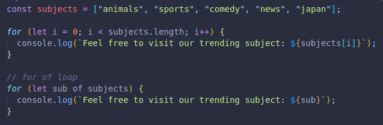
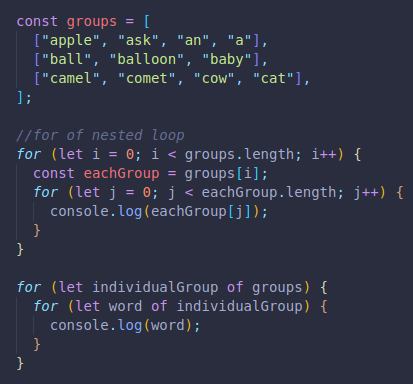
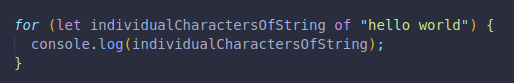
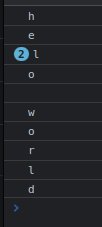
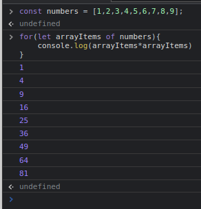

It makes it easier to iterate, no need for a variable i with a condition and a mathemathical operation in the end.
It is most commonly used with arrays, but can be used with other types too.
Each time we nest a for of loop inside another, we are accessing the child of the parent, if we have a simple array, one for of loop will access each array item.
Example with regular for loop and for of loop.
If we have an array inside an array, our first for of loop will access each individual child array, our second nested for of loop will access the individual array items of our child arrays, with the parent array outside them.
Example with regular nested for loop and nested for of loop.
We can also use them with strings.
Since the for of loop can be used with other iterable elements, it works with strings.
Here we are accessing the children of the string, which would be individual characters.
So it will console log the characters one by one.
Here we take an array, access each array item, and make a for of loop to console log the squared version of the number.
